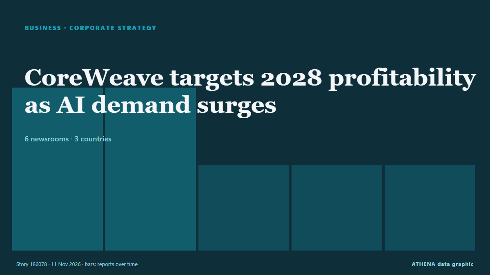

Business, Companies & Investment
SponsoredPresented by  Cybernetics and Artificial Intelligence Lab Welcome to the Cybernetics and Artificial Intelligence Laboratory, established at the Department of Business Administration of the National and Kapodistrian University of Athens. The lab is headed by Professor Dimitrios Thomakos. The lab aims to do research that can be published in top venues. Our research uses tools and methods of Artificial Intelligence, and lies in the following areas: - Forecasting - Decision making - Cyber security - Finance We are always looking forward to collaborating with exceptional students!
Cybernetics and Artificial Intelligence Lab Welcome to the Cybernetics and Artificial Intelligence Laboratory, established at the Department of Business Administration of the National and Kapodistrian University of Athens. The lab is headed by Professor Dimitrios Thomakos. The lab aims to do research that can be published in top venues. Our research uses tools and methods of Artificial Intelligence, and lies in the following areas: - Forecasting - Decision making - Cyber security - Finance We are always looking forward to collaborating with exceptional students!

Corporate strategyCoreWeave targets 2028 profitability as AI demand surges
The company reported revenue of US$3.66 billion for the third quarter ended September, up from US$1.37 billion a year earlier. from The Business Times
| 29 Oct | 104 |
|---|---|
| 30 Oct | 92 |
| 31 Oct | 27 |
| 1 Nov | 33 |
| 2 Nov | 116 |
| 3 Nov | 111 |
| 4 Nov | 112 |
| 5 Nov | 111 |
| 6 Nov | 77 |
| 7 Nov | 34 |
| 8 Nov | 57 |
| 9 Nov | 106 |
| 10 Nov | 89 |
| 11 Nov | 36 |
Siemens Energy More Than Triples Dividend After Record Year
Siemens Energy proposes to more than triple its dividend for the fiscal year 2026 ended on September 30 after booking record revenues and orders, driven by the grid and gas turbine businesses amid… from OilPrice.com
David Jones's receiver reveals list of 19 stores set to close
The retailer, which has 38 stores nationally, was placed in voluntary administration less than a week ago. from ABC News Australia
Freightos launches AI-powered platform for freight forwarders
Freightos has launched a new generation of its Freightos for Forwarders platform, bringing artificial intelligence into freight quoting, booking and rate management. from Container News
Retailers pin hopes on Christmas as cautious shoppers hold back – The Economy of Everything
Black Friday ranks as NZ’s second-largest retail sales period after Boxing Day. from New Zealand Herald
ITV’s Sale to Sky ‘Progressing as Planned’ as Broadcaster Cuts Fourth-Quarter Content Spend Amid U.K. Ad Slump
U.K. broadcaster ITV’s CEO Carolyn McCall said the broadcaster’s sale of its Media & Entertainment business to Sky is “progressing as planned,” even as weaker advertiser demand forced the U.K.… from Variety
Botswana to Double Its De Beers Stake to 30%
Botswana will double its De Beers holding from 15% to 30% and become the largest single shareholder, President Duma Boko told parliament on 9 November 2026. from The Rio Times
IBM Ends H-1B Visa, Green Card Sponsorship For Majority Consulting Roles
IBM Consulting has used US high-skilled visa programs to address skill shortages, but participation has been declining for years, a company spokesperson told Reuters. from NDTV
US government removes WuXi AppTec from Chinese military list
The Pentagon removed WuXi AppTec from its list of Chinese military companies, but there's still the risk of redesignation for the Shanghai service provider. from Endpoints News
Thessaloniki Tax Fraud Case: One Defendant Remanded in Custody
Four defendants have been released under restrictive conditions following questioning, while prosecutors allege that a criminal network used shell companies and front managers to defraud the Greek… from To Vima (English)
Vodacom half-year profit surges 25.7% on Africa-wide growth, Safaricom deal
South African mobile telecoms operator Vodacom Group reported a 25.7% jump in half-year profit on Tuesday helped by growth across its markets and a fuller contribution from Kenya’s Safaricom… from Club of Mozambique
Tech investor SoftBank Group logs US$7bil quarterly net loss
The company's profits fluctuate sharply due to volatile global technology stocks and changes in its investment and acquisition portfolio. from Free Malaysia Today
Oura to buy AI care startup Counsel Health for $625M
Wearable ringmaker Oura is buying AI primary care startup Counsel Health. from Endpoints News
OpenAI Raises $11 Billion At $1.25 Trillion Valuation
The funding was wired to the company as of Friday. from NDTV
QatarEnergy to take 25% of Chevron-operated PEL 82 offshore Namibia
The agreed farm-in would bring QatarEnergy into a Walvis basin exploration license alongside Chevron, which would retain operatorship with a reduced 55% stake on completion. from World Oil
Honda reports 65% jump in 1st-half net profit, lifts full-year outlook
Honda Motor Co. on Tuesday reported a 65.7 percent surge in net profit for the fiscal first half and raised its full-year outlook, ci. from Mainichi (English)
Greece Has the Second-Lowest Average Salary in the EU, Eurostat Says
Greece’s average full-time adjusted salary was €18,800 in 2025, about 45% of the EU average of €41,500, according to Eurostat. from Greek City Times
UN body agrees to postpone review of US rights record after Trump administration snub
Critics warn the walkout could encourage other countries — many of which bristle about intense scrutiny from human rights monitors — to follow suit. from Courthouse News
Weil Gotshal Partners Vote to Shut Down After Nearly a Century
The large law firm, known for its powerful bankruptcy practice, started coming apart as prominent partners moved to other firms. from New York Times Business
French president, wife file new lawsuit against US podcaster Candace Owens
Complaint accuses Owens of spreading false claims about Brigitte Macron's gender, describing alleged conduct as 'international humiliation' from Anadolu Agency (English)
Iranian, Ivorian ministers discuss ways to boost ties in ICT sector
Information and Communication Technology Minister Sattar Hashemi and Ivorian Minister of Digital Transition and Technological Innovation Djibril Ouattara have explored the potential to expand… from Tehran Times
Kinahan cartel ‘lured’ ex-Premier League footballer’s brother to his doom over ‘smuggling operation out of Puerto Banus’
Darren ‘Roy’ Hoolahan, 40, the brother of former Republic of Ireland international Wes Hoolahan, has been missing since June. from The Olive Press
Tesla to refund Cybertruck deposits as demand exceeds production
CEO Elon Musk made the announcement as the electric vehicle maker said it was winding down production of the pickup truck at its Texas factory. from Free Malaysia Today
Nvidia's Jensen Huang faces scrutiny over alleged affair with Chinese spy
President Donald Trump was briefed about a year ago about those intelligence findings, The New York Times reported. from CNBC World
ANZ Bank NZ’s profit slips on expenses and impairments
The results are the first presented by Ben Kelleher as chief executive. from New Zealand Herald
Nvidia in turmoil as China denies spying claims
Nvidia shares tumbled this Monday after the AI chipmaking giant said it would investigate its CEO's affair with a suspected Chinese spy. from France 24 English
Berkshire's Q3 net earnings down by 28% to $22.11B
Berkshire Hathaway Inc. announced on Saturday that its net earnings attributable to shareholders saw an annual decline of 28% to land at $22.11 billion. from AzerNews
David Ellison says AI could be the ‘biggest creative unlock in modern history’
During Paramount Skydance's latest earnings call, CEO David Ellison said "it's hard to imagine" AI won't have a bigger impact on the film industry than CGI. from The Verge
Nigeria, UK deepen creative industry ties ahead of 2028
The UK and Nigeria have concluded a series of creative-sector engagements in Lagos, connecting creative businesses, practitioners, policymakers and cultural institutions with expertise, networks and… from Daily Trust
Dolly Parton's manager drops lawsuit against nephew
The lawsuit filed in September accused the late musician's nephew of attempting to extort money from her estate. from Free Malaysia Today
After the US midterm rout of Trumpism, the world struggles to trust America again
For Joe Reeve, the midterm afterglow faded fast.The London startup founder was among the wave around the Trump-weary world awakening to. from Mainichi (English)
Majority accuses Akufo-Addo administration of creating the conditions for passport racketeering.
By Amoako Kwame The Majority in Parliament has accused the previous Akufo-Addo administration of creating conditions that enabled an alleged service passport racketeering scheme at the Ministry of… from GBC Ghana Online
Iran’s 26th International Electricity Exhibition showcases latest industry achievements
The 26th Iran International Electricity Exhibition is underway in Tehran, bringing together 420 domestic and foreign companies to showcase their latest products, technologies and capabilities under… from IRNA (English)